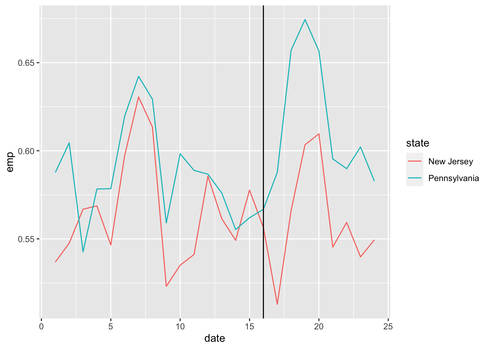

We are going to use data from the Current Population Survey to try and replicate the minimum wage analysis of Card & Krueger (1994). We’ll go through the steps below together.
You will find the codebook “Codebook.html” helpful to understand what each variable means.
Part 1: Data setup
1 - Read in the file “cps-CardKrueger.csv”, and keep only people in the survey with age between 16 and 25. This leaves us a sample of young workers who we think will be affected by the minimum wage.
library(ggplot2)library(dplyr)
Attaching package: 'dplyr'
The following objects are masked from 'package:stats':
filter, lag
The following objects are masked from 'package:base':
intersect, setdiff, setequal, union
D <-read.csv("../data/cps-CardKrueger.csv") %>%filter(AGE>=16,AGE<=25)
2 - Create a variable that indicates if an individual is employed using the variable EMPSTAT. 3 - Create a variable that indicates which individuals are subject to the minimum wage change (those who are in New Jersey from April 1992 onwards). You will need to use the variables YEAR, MONTH, and STATEFIP.
We’ll assume someone is employed if they are either working or have a job and worked last week. We’ll also create a date variable and the policy indicator in three successive lines.
D <- D %>%mutate(emp = EMPSTAT<=12) %>%mutate(date = (YEAR-1991)*12+ MONTH) %>%mutate(policy = (date>=16) & (STATEFIP==34)) %>%#<- April 1992 is month 16, New Jersey has a FIPS code 34mutate(state =factor(STATEFIP,levels=c(34,42),labels=c("New Jersey","Pennsylvania")))
To validate let’s look at the employment rate over time:
D %>%group_by(date,state) %>%summarize(emp=mean(emp)) %>%ggplot(aes(x=date,y=emp,color=state)) +geom_line() +geom_vline(xintercept =16)
`summarise()` has grouped output by 'date'. You can override using the
`.groups` argument.

The vertical line here denotes the month in which the minimum wage is introduced.
Part 2: Diff-in-Diff
1 - Use the regression function lm to run a Diff-in-Diff model on your employment variable, following the regression set-up we discussed in class. You may find the function as.factor() helpful for creating dummy variables.
We run the model:
D %>%lm(emp ~ policy + state +as.factor(date),data=.) %>%summary()
2 - What do you find? Do the data here replicate the findings of Card & Krueger? Is your result significant?
We find a negative effect of minimum wage on employment, which is different from Card and Krueger’s analysis. The coefficient on the policy dummy is -0.03 with a standard error if about 0.01, suggesting the estimate is significance at most reasonable levels of significance (the p-value is 0.003).
Part 3: Testing for parallel trends
1 - Create a new dataset consisting only of observations from 1991. 2 - Create a new dummy variable, \(Q_{it}\) that is equal to 1 if person \(i\) is in New Jersey after June, 1991.
D2 <- D %>%filter(YEAR==1991) %>%mutate(Qit = (STATEFIP==34) & (MONTH>=6))
3 - Consider the model: [ E_{ist} = {t} + {s} + Q_{it} ] where \(\gamma_t\) and \(\mu_{s}\) are time and state effects. What does the parallel trends assumption imply about \(\alpha\)?
The parallel trends assumption says that for any \(t\)before introduction of the policy, we must have:
[[E_{ist}] = {t} + {s} ] and so \(\alpha\) in the model above must be equal to zero.
4 - Use a regression analysis to test the parallel trends assumption.
We estimate the model:
D2 %>%lm(emp ~ Qit + state +as.factor(date),data=.) %>%summary()
and we get an estimate on \(Q_{it}\) of -0.003. Given a standard error of 0.014 we do not reject the null hypothesis at 95% significance. This is also reflected in the high p-value (0.83).
Part 4: Placebo test
1 - Use the RACE variable to conduct a placebo test of your specification. Note that RACE is a categorical variable, so you could run multiple placebo tests if you wanted to.
We run a regression using \(W_{it}\), a dummy indicating the individual is “white”, as a placebo outcome.
D %>%lm(RACE==100~ policy + state +as.factor(date),data=.) %>%summary()
Our Null hypothesis is that the coefficient on race is equal to zero, which suggests there is no feature of the research design that can result in spurious results. Looking at results, we do not reject this null hypothesis based on the test statisic (-1.2) and corresponding P-value (0.23).